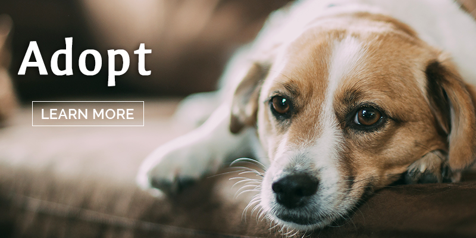

Founded in 1976, we are a 501(3)(c) non-profit, no-kill organization considered to be one of Ohio’s most reputable long-standing cat and dog humane rescue groups. Our mission is to rescue, foster, and adopt companion animals in Northeastern Ohio.
Animal Welfare Advocacy
Have you heard of Goddard's Law? Ohio Legislation passed in July, 2016 to make it felony to abuse companion animals was championed by our Executive Director, Amy Beichler. The four year fight to get this law passed exemplifies the passion that Amy and the PAWS organization has to protect defenseless animals and prosecute those who abuse them.Volunteering - We Need Your Help
The backbone of every non profit organization is its volunteers. PAWS is a shining example of that. We have so many volunteers who selflessly give their time and efforts to help us achieve our goals and carry on our mission to foster, heal and find forever homes for our rescues. We are always in need of more passionate, caring individuals to volunteer their time. If you would like to learn more about the opportunities that PAWS can offer you, please click below.Adoptions
We don't have a shelter. We take rescues from the shelters, from the streets, and from abusive environments and place them in our Foster Homes. Our Foster Home Program provides temporary homes for these animals until a forever home can be found. To find out more, about the adoption process, including fees and applications, please click below.Fosters - We Need Caring Fosters
Fosters - We Need Caring Fosters The PAWS Foster Home Program provides homeless animals with a caring, loving environment until their forever homes can be found. We take great care in choosing these foster families to make sure the animals are well cared for. We are constantly looking for more foster home volunteers to take in the rescues that we bring in. To find out more about the details of Foster Home Volunteering, click below.